OTIUM is the practice of deliberate leisure. In the classical sense, otium is not escape from work but time when attention returns to memory, landscape, and thought — without a utilitarian deadline.
We shape routes for lingering, not for checklist tourism. The goal is presence in a place rather than consumption of sights.
OTIUM is not a tour operator. It is an invitation to walk, pause, and leave a route unfinished if the light on a façade deserves another minute.
Historical and reference coats of arms
Tokyo
Guide. Places in this edition: 34.
Akihabara Electric Town
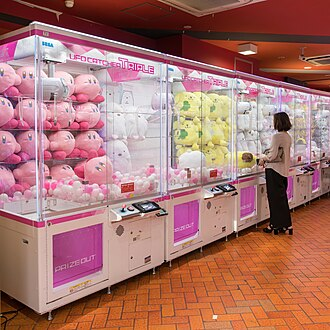
Akihabara is Tokyo's iconic electronics district, famed for its bustling arcades, tech shops, and pop culture attractions. Known as Akiba among locals, it's home to countless electronics stores, game centers, and maid cafes. The neighborhood hosts annual conventions like Comiket, one of the largest comic and anime expos globally. Akihabara Electric Town features neon-lit streets that create a unique nighttime atmosphere. It's also famous for its 'mori kei' fashion style, blending traditional Japanese aesthetics with modern electronics themes. Many visitors come here seeking rare gaming consoles, manga, and anime merchandise.
Originally a shopping area for electrical goods during the Meiji era, Akihabara evolved into Japan's premier gadget hub after World War II. Today it remains a magnet for otaku culture, anime fans, and technology enthusiasts worldwide. Visit Akihabara to immerse yourself in Japan's vibrant geek culture and explore cutting-edge gadgets and retro collectibles.
Edo-Tokyo Museum
Period: 1993
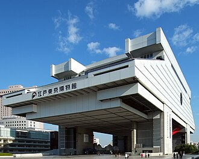
The Edo-Tokyo Museum is a fascinating cultural institution that transports visitors back to the vibrant era of Edo and early modern Tokyo. Located in Tsukishima, it showcases Japan's rich history through interactive exhibits, artifacts, and multimedia presentations. It houses over 60,000 items related to Edo and early modern Tokyo. Interactive exhibits allow visitors to try traditional crafts like woodblock printing and kimono-making. The museum features replicas of famous landmarks such as Nihonbashi Bridge and Asakusa Kannon Temple. Exhibits cover themes ranging from daily life in Edo to major historical events like the Meiji Restoration. Opened in 1993, it replaced the old power plant building.
Established in 1993, the museum was built on the site of the former Tokyo Electric Power Company headquarters. It celebrates the evolution of Tokyo from its roots as Edo, the ancient capital of Japan, to the bustling metropolis it is today. The museum highlights key moments in Japanese history, including samurai culture, traditional craftsmanship, and urban development. Visiting the Edo-Tokyo Museum provides insight into Japan’s historical transformation and offers a unique opportunity to experience the city's past through hands-on activities and immersive displays.
Ginza crossing
Style: Modern | Period: 1987
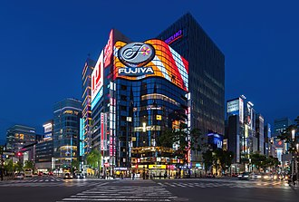
Ginza Crossing is a bustling intersection located at the heart of Tokyo's upscale shopping district, known for its luxurious boutiques and high-end department stores. The area features over 60 renowned brands and international designers. It attracts millions of tourists annually due to its unique atmosphere and entertainment options. Ginza Crossing often hosts special events, festivals, and seasonal displays. Its design incorporates modern glass facades and open walkways that enhance natural light. This intersection serves as a cultural hub where traditional meets contemporary.
Established in 1987, Ginza Crossing replaced the previous pedestrian plaza and became one of Japan's most iconic gathering spots, showcasing modern architecture and vibrant street life. Visitors come here to experience the best of Japanese fashion, cuisine, and culture all under one roof.
Hamarikyu Garden
Style: Traditional Japanese landscape gardening | Period: 1869
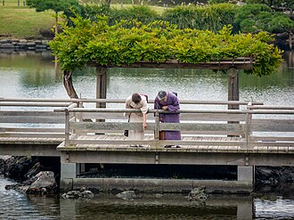
Situated on the outskirts of Tokyo's busy metropolis, Hamarikyu Garden is a serene oasis that transports visitors back to Edo-era Japan. Originally built as a private retreat for the shogun during the Meiji Restoration era, it offers a glimpse into traditional Japanese aesthetics and tranquility. The garden features a picturesque pond surrounded by lush greenery and traditional Japanese architecture. It includes a restored tea house called 'Teien-tei,' which serves traditional Japanese sweets and tea. Visitors can also explore the historic Tsukiji Bridge, originally constructed in 1714. Its grounds are home to rare species of azaleas and hydrangea blooming seasonally. During cherry blossom season, Hamarikyu Garden becomes particularly enchanting with its sakura trees lining the paths.
Established in 1869, Hamarikyu Garden was once a luxurious estate belonging to the Tokugawa shogunate. After the Meiji Restoration, it became a royal park where Emperor Meiji and Empress Shōken frequently enjoyed leisurely strolls amidst its manicured landscapes and elegant pavilions. Today, it remains one of Tokyo’s most iconic historical gardens, showcasing intricate pondscapes, carefully arranged bonsai trees, and traditional teahouses. A must-visit for anyone seeking respite from urban hustle, Hamarikyu Garden provides a peaceful escape with its meticulously designed scenery and historical charm.
Imperial Palace
Style: Castle-style architecture with traditional Japanese elements | Period: 1450s
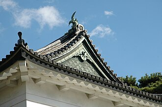
The Imperial Palace is Tokyo's most iconic landmark and the residence of Japan's imperial family. It stands as a symbol of tradition and continuity amidst modern urban life. The palace covers approximately 358 acres, making it one of the largest castles in the world. It was renovated extensively after World War II but retains its historical charm. Access to the inner parts of the palace is restricted due to security reasons. The East Garden is home to over 100,000 cherry trees, creating a breathtaking cherry blossom festival each spring. The palace serves as a cultural hub where ceremonies and official events take place.
Originally built in the 1450s as Edo Castle by Tokugawa Ieyasu, it served as the seat of power for shoguns until 1869 when Emperor Meiji moved his court here. Today, the palace complex includes the main castle grounds and several buildings used by the imperial family, including the Imperial Palace East Garden, which is open to the public during certain times of the year. Visiting the Imperial Palace offers a unique opportunity to witness traditional Japanese culture up close while enjoying stunning views of the cityscape.
Imperial Palace East Garden
Address: Chiyoda | Style: Moats, stone keeps, landscaped lawns | Period: Edo foundations; garden 1960s
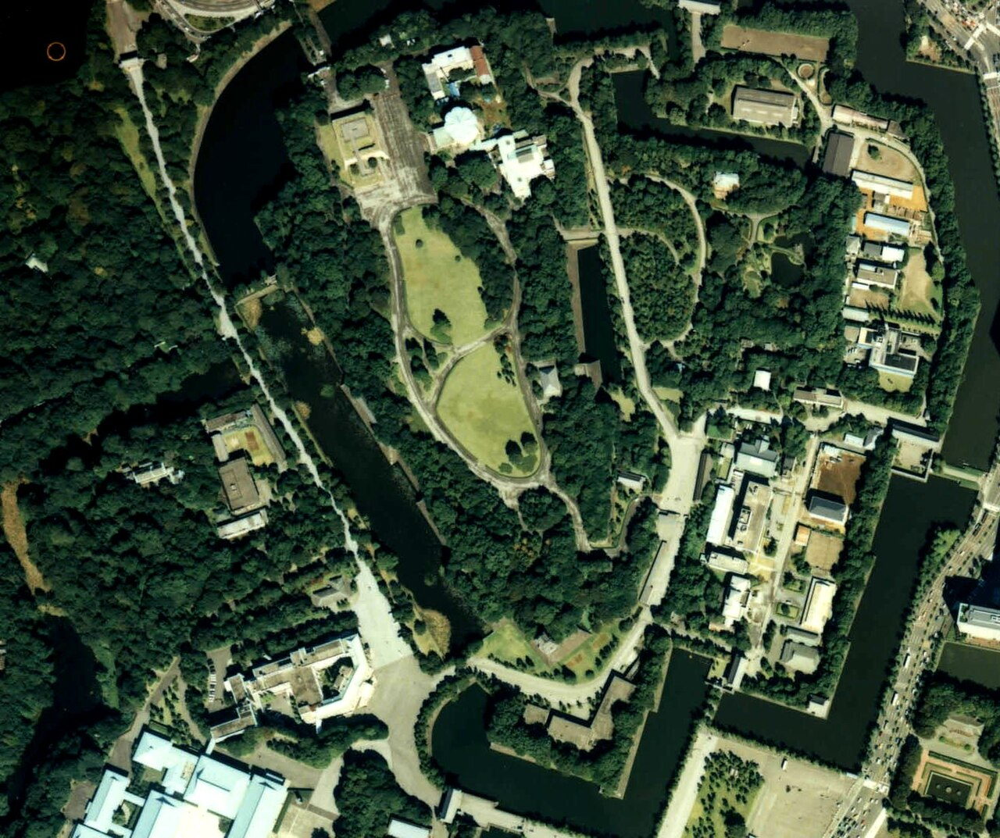
Public garden over old honmaru foundations with guardhouses and seasonal flower beds. Closed Mondays and Fridays—check palace website. Kitanomaru Park links to crafts museums north.
Imperial Household Agency opened portions after post-war reconstruction stabilised. Quietest moat walk inside the office core.
Imperial Palace precinct
Address: Chiyoda | Style: Moats, stone walls, Fushimi-yagura watchtowers | Period: Edo Castle core; modern palace rebuilt mid-20th c.
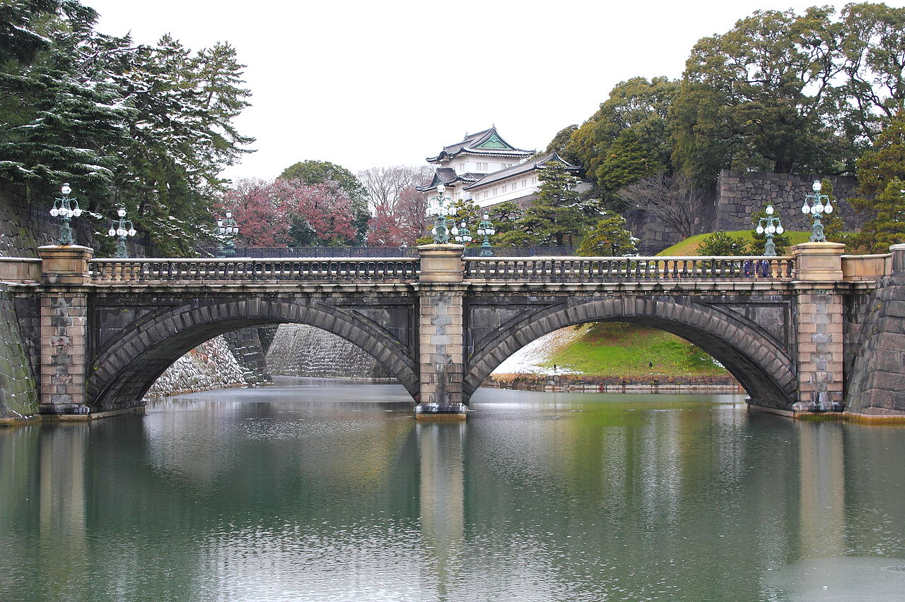
East Gardens open on fixed schedules over Edo-period foundations; the Nijūbashi stone bridge is a ceremonial photo stop on the outer moat. Guided interior tours of palace grounds require advance reservation in Japanese or English slots. Kitanomaru Park links to the crafts-focused National Museum of Modern Art.
Tokugawa shogunal castle became the imperial residence after 1868; wartime loss led to restrained replacement architecture. Green moat ring separating Marunouchi office towers from quiet gravel plazas.
Godzilla head and cinema towers mark Tokyo's densest nightlife warren east of the station. Golden Gai micro-bars sit a few blocks north. Omoide Yokocho yakitori alleys hug the west tracks.
Black-market stalls evolved into host clubs and cinemas under yakuza-era lore now policed. Midnight energy contrast to daytime office grids.
Matsuke Heikichi - Nogaku zue - Walters
Style: traditional Japanese architecture | Period: late 19th century
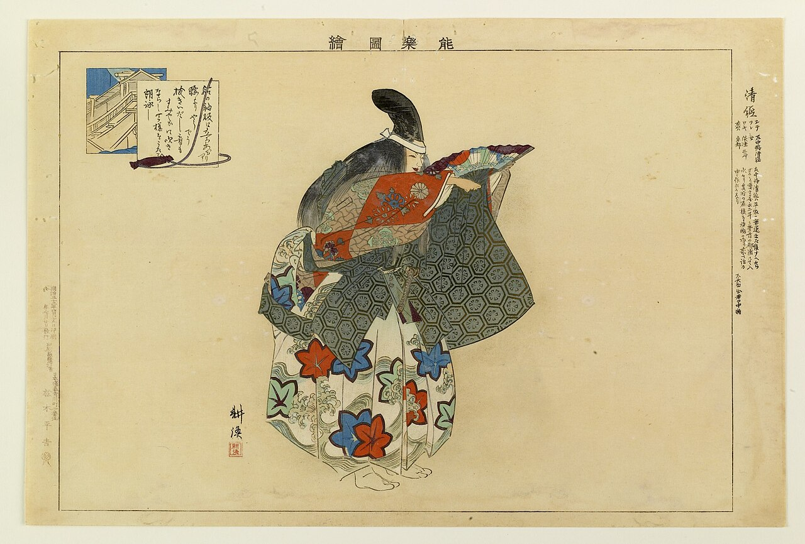
This photograph captures the historic Matsuke Heikichi theater, a significant landmark in Tokyo's cultural heritage. Built during the Meiji era, it is one of the oldest traditional theaters dedicated to nōgaku performances. The theater was originally built as a venue for kabuki but later adapted for nōgaku performances. It underwent extensive renovations in the early 20th century to preserve its architectural integrity. Nōgaku performances often feature elaborate costumes and masks, highlighting the richness of Japanese culture. Today, the theater hosts both traditional and contemporary performances, attracting audiences worldwide. Located in the heart of Tokyo, it remains an important symbol of Japan’s artistic heritage.
Constructed in the late 19th century, the Matsuke Heikichi theater has been a hub for nōgaku, a form of Japanese traditional theater that combines dance, music, and drama. It played a crucial role in preserving Japan’s cultural traditions by showcasing performances that date back centuries. Visitors should experience the unique atmosphere of nōgaku at this theater, where they can witness the artistry and skill of performers in an authentic setting.
Meiji Shrine
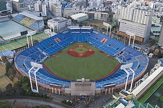
Meiji Jingū — Shinto shrine in Tokyo, Japan.
Meiji Shrine
Address: Shibuya, Yoyogi | Style: Shinto shrine in cypress; vast torii approach | Period: 1920 (rebuilt 1958 after war damage)
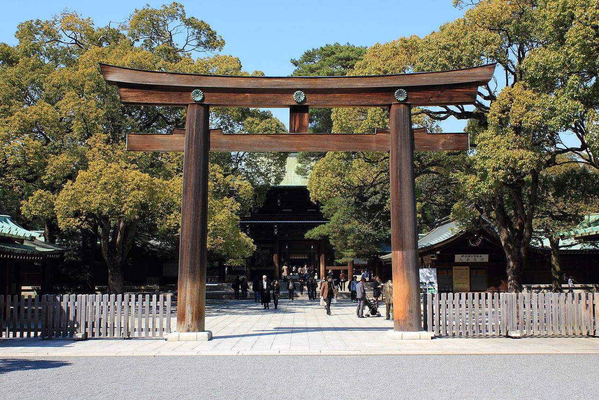
Shinto shrine in an urban forest honoring Emperor Meiji and Empress Shoken. Gravel paths and massive torii quiet the city noise behind Harajuku. Traditional Shinto weddings with processions are common on weekends. Barrels of sake donated by brewers line one approach path.
Planted groves replaced open training grounds; post-war reconstruction preserved the axial layout. Green buffer between Yoyogi Park crowds and contemplative ritual space.
First forest torii framing gravel paths that quiet Harajuku crowds into ritual space. Wedding processions pause photographers at the second torii. Omotesandō boutiques sit minutes south of the forest edge.
Planted groves were a Meiji-era nation-building landscape project. Everyday Shinto procession scenery inside the Yamanote loop.
Nezu Museum
Style: Traditional Japanese style with modern touches | Period: 1919
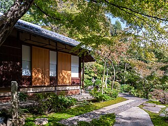
The Nezu Museum is a serene oasis of art and culture nestled amid Tokyo's bustling urban landscape. Established in the early 20th century by wealthy merchant Taneichi Nezu, it showcases an impressive collection of Japanese and Western art. Located within a tranquil garden setting, the museum offers visitors a peaceful escape from the hustle and bustle of downtown Tokyo. It houses one of the largest collections of ukiyo-e woodblock prints in Japan. The architecture of the building itself is notable for its traditional Japanese design elements combined with modern aesthetics. Exhibitions often feature rotating displays of both permanent and temporary collections. The museum regularly hosts special events such as lectures, workshops, and performances.
Founded in 1919 by Taneichi Nezu, a prominent businessman and collector, the museum was originally intended as a private residence and gallery for his extensive art collection. Over time, it evolved into a public institution dedicated to preserving and exhibiting works of art from Japan and Europe. Visitors come here to appreciate the rare and exquisite pieces that span centuries of artistic expression, including paintings, sculptures, ceramics, and prints.
Nezu Shrine
Style: Traditional Japanese Shinto style with elements of Buddhist influence. | Period: 1626
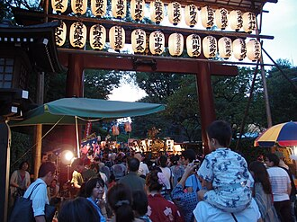
Perched on a hilltop overlooking Tokyo's bustling metropolis, Nezu Shrine is a serene oasis of tranquility amidst the hustle and bustle of modern life. The main hall features intricate wood carvings and elaborate gold leaf decorations. Nezu Shrine hosts annual festivals celebrating autumn foliage and spring cherry blossoms. It offers stunning views of Tokyo Skytree and the surrounding skyline during sunset. Located within easy walking distance of popular shopping districts such as Omotesando and Harajuku. Regularly used as a filming location for TV dramas and commercials.
Founded in 1626 by Tokugawa Iemitsu, the third shogun of the Edo era, Nezu Shrine was originally dedicated to the deities of Mount Fuji and the sea god Ryūjin. Over time, it has become one of Tokyo's most beloved shrines, known for its elegant architecture and peaceful atmosphere. Visitors come here to experience the harmonious blend of traditional Japanese culture and urban charm, offering a momentary escape from the city's fast pace.
Odaiba Statue of Liberty
Style: Modernist, influenced by Art Deco and traditional Japanese aesthetics | Period: 1996
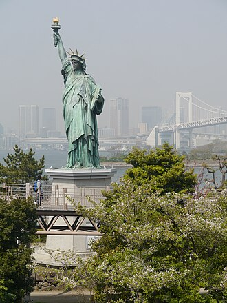
Perched on Odaiba's artificial island, the Statue of Liberty stands as a testament to Japan's embrace of American culture and values. Modeled after its New York counterpart, it serves as both a tourist attraction and a symbol of friendship between the two nations. The statue is approximately 33 meters tall, including its pedestal. It weighs around 400 tons and was constructed using stainless steel and copper plates. Located within Odaiba's Miraikan Museum complex, it offers panoramic views of the cityscape. Inspired by the original Statue of Liberty, it has become one of Tokyo's most recognizable symbols. Opened to the public in 1996, it attracts thousands of visitors annually.
Completed in 1996, the statue was a gift from the United States commemorating the centennial of Japanese immigration to America. It replicates the iconic design of the Statue of Liberty in New York Harbor but with distinctly Japanese elements, such as traditional kimono-inspired clothing for Lady Liberty. Visitors come here to admire the stunning view of Tokyo Bay and appreciate the cultural exchange embodied by this monumental sculpture.
Roppongi Hills Mori Tower
Style: Postmodernism | Period: 2003
Located in the heart of Tokyo's Roppongi district, Roppongi Hills Mori Tower is a modern marvel that combines shopping, dining, offices, and residential spaces under one striking glass-and-steel structure. The tower houses over 400 shops and restaurants within its extensive retail complex. It features the Skytree Observatory on the 52nd floor offering panoramic views of Tokyo. Designed with energy-efficient technologies, it incorporates state-of-the-art green building practices. Roppongi Hills also includes a luxury hotel and residential units. Its exterior uses reflective glass panels that change color depending on the time of day.
Completed in 2003, Roppongi Hills Mori Tower was designed by renowned architect Kenzō Tange and his firm, Tange Associates. The tower stands as a symbol of Japan's post-war architectural innovation, showcasing cutting-edge design principles and materials. Its iconic shape has become an instantly recognizable landmark, attracting visitors worldwide. A must-visit for anyone seeking a glimpse into contemporary Japanese architecture and urban living, Roppongi Hills offers breathtaking views, innovative retail options, and cultural attractions.
Sensō-ji
Address: Asakusa, Taitō | Style: Buddhist temple; Kaminarimon and five-storey pagoda | Period: 645 tradition; current buildings mostly post-war
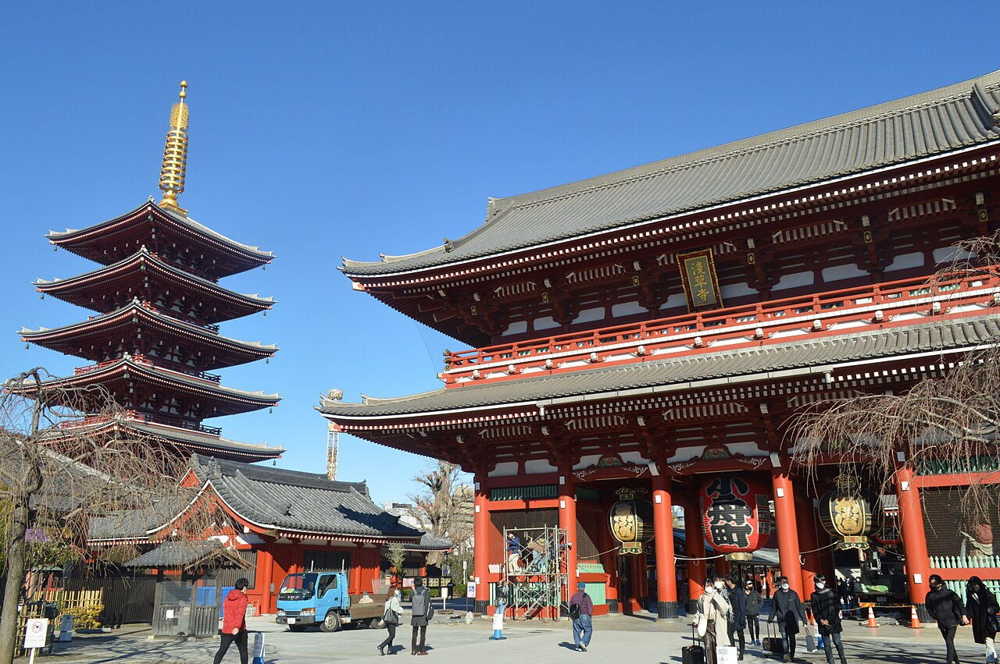
Tokyo's oldest major temple precinct, entered through the giant red Kaminarimon with its paper lantern. Nakamise shops line the approach. The Thunder Gate's giant straw sandals hang as symbolic guardians. New Year's hatsumōde crowds are among the largest in Japan.
Legends tie the site to fishermen finding a Kannon image; Edo-period urbanisation made Asakusa a festival quarter. Traditional counterweight to Shibuya's neon modernity.
Sensō-ji
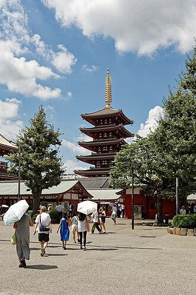
Sensō-ji Temple — Buddhist temple in Tokyo, Japan.
Shibuya Crossing
Period: early 20th century
Shibuya Crossing is Tokyo's iconic intersection, famed for its bustling pedestrian traffic and vibrant neon signs. It is one of the busiest intersections in the world with over 2,500 pedestrians crossing every minute during peak hours. The area around Shibuya Crossing features numerous shopping malls, restaurants, and entertainment venues. Each year, millions of tourists gather at the intersection to capture the iconic 'love-locks' on the nearby bridge. At night, the neon-lit signs create a surreal atmosphere, making it a popular spot for photography enthusiasts. In recent years, the area has undergone further transformation with new developments such as the Shibuya Hikarie complex.
Originally built in the early 20th century, Shibuya Crossing has become a symbol of modern Japan, known for its busy intersections and colorful nightlife. It was renovated extensively in the 1980s, introducing LED displays that have since become a global icon of Japanese pop culture. Visitors come here to witness the energy and excitement of one of Tokyo’s most famous spots, where people rush through the crosswalk while neon lights illuminate the scene.
Shibuya Crossing (street level)
Address: Shibuya Station
Scramble Square rooftop adds paid views above the junction. Rain umbrellas create moving colour fields at rush hour. Station rebuilds widened sidewalks for safety with tourism growth. Street-level kinetic complement to aerial crossing photos.
Shibuya Scramble Crossing
Address: Shibuya Station Hachikō exit
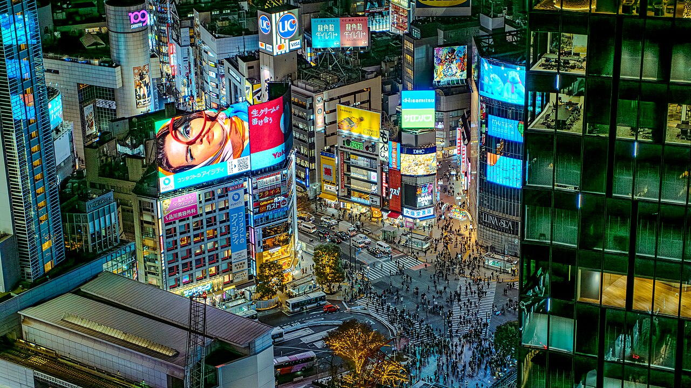
Pedestrian scramble where diagonal crossings fill the entire junction. Station rebuilds and sky decks reframed viewing angles. Hachikō plaza anchors meeting points under the department store screens. Rain reflections make the crossing especially photogenic at night.
Grew with Shibuya Station's role as a youth fashion and nightlife hub after the 1960s. Tokyo's most filmed pedestrian kinetic sculpture.
Shinjuku Gyoen
Period: 1926
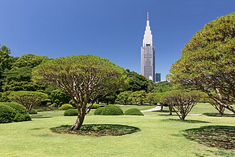
Located just north of Tokyo's bustling Shinjuku district, Shinjuku Gyoen National Garden is a serene oasis offering a glimpse into traditional Japanese garden design and nature. It covers approximately 57 hectares of land. The park features over 180,000 trees representing more than 400 species. Each season brings different blooms, including cherry blossom, azaleas, and hydrangeas. Its architecture includes historic buildings such as the Tea House and Administration Building. Visitors can also enjoy seasonal festivals like the Spring Cherry Blossom Festival.
Established in the early Showa era (1926), Shinjuku Gyoen was originally intended as a recreational space for imperial family members and high-ranking officials. Today it showcases three distinct styles—Japanese, European formal, and English landscape gardens—blending historical significance with modern conservation efforts. Visit Shinjuku Gyoen to experience Japan’s unique blend of traditional and Western garden aesthetics while enjoying tranquil walks amidst manicured landscapes.
St. Mary's Cathedral Tokyo
Style: Gothic Revival and Romanesque | Period: late 19th century/Meiji Restoration era
St. Mary's Cathedral is a prominent landmark of Tokyo's Catholic community, standing as one of the city's most significant religious structures. The cathedral was completed in 1899 after several years of construction. It features intricate stained glass windows depicting biblical scenes. Its bell tower offers panoramic views of central Tokyo. St. Regular services are held here, showcasing traditional liturgical practices.
Built in the late 19th century during Japan's Meiji Restoration era, St. Mary's Cathedral was constructed by Italian architect Giuseppe Pettoruti and reflects both Gothic Revival and Romanesque architectural styles. The cathedral served as a symbol of Western influence on Japanese culture and became a center for Christian worship in Tokyo. Visitors can appreciate its historical significance as well as its architectural beauty, making it a notable stop for those interested in exploring Tokyo's cultural heritage.
Sumida Park
Period: late 19th century
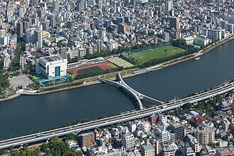
Sumida Park is a vibrant urban oasis nestled along the banks of Tokyo's Sumida River. It offers visitors serene green spaces, scenic views, and opportunities for relaxation amidst bustling city life. The park spans approximately 68 hectares and includes walking paths, lawns, and picnic areas. It hosts annual events like the Sumida River Fireworks Festival, attracting millions of spectators each year. Sumida Park features several historic monuments and statues commemorating important figures in Japanese history. During autumn, the park transforms into a golden paradise with colorful foliage. It's also home to the Tokyo Tower Observatory, offering panoramic views of the city.
Originally built as part of Tokyo's water management system in the late 19th century, Sumida Park has evolved into one of the city's most beloved recreational areas. Over time, it became known for its cherry blossom trees, which attract thousands of visitors during springtime festivals. Visitors come to Sumida Park to enjoy its tranquil atmosphere, beautiful scenery, and cultural events such as fireworks displays and traditional performances.
Tokyo Camii
Style: modern Islamic architecture | Period: early 20th century
Tokyo Camii is a prominent mosque in Tokyo, Japan, showcasing the city's diversity and multiculturalism. It is one of the largest mosques in East Asia. The architecture combines traditional Islamic elements with modern design features. Tokyo Camii serves as a spiritual center for Muslims living in Tokyo and nearby areas. The mosque holds regular prayer services and cultural events. It attracts visitors interested in exploring Japan's multicultural landscape.
Built in the early 20th century, Tokyo Camii reflects the growing Muslim community's need for religious spaces in modern urban Japan. The mosque was constructed during a time when Japanese society became more open to international influences, particularly Islamic culture. It has become a symbol of cultural exchange and tolerance within the bustling metropolis. Visiting Tokyo Camii offers insight into the city's rich cultural tapestry and its embrace of diverse communities.
Tokyo Church of Christ
Style: contemporary | Period: late 20th century
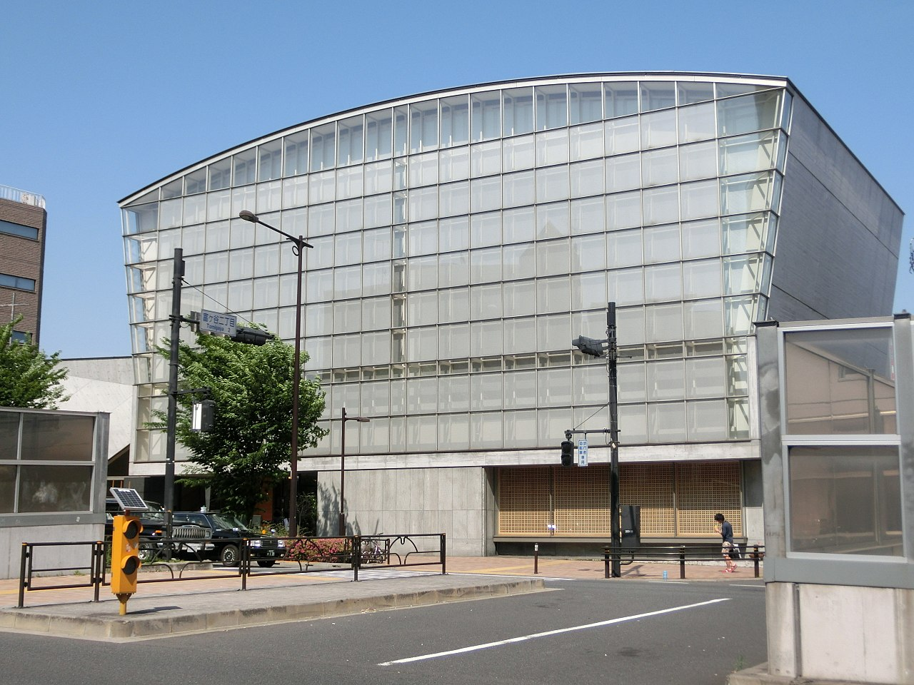
Tokyo Church of Christ is a modern Christian church located in the bustling Shinjuku district, offering worship services and community activities for locals and visitors alike. It hosts weekly Sunday services with contemporary music and sermons. The church organizes regular social events such as potluck dinners and charity drives. Located near major transportation hubs, it’s easily accessible by train or bus. Its architecture features large windows allowing natural light to fill the interior space. Services are conducted in both Japanese and English.
Established in the late 20th century, Tokyo Church of Christ has become a prominent place of worship within the diverse religious landscape of Japan. It was built to accommodate growing spiritual needs amid urban development and offers a welcoming atmosphere for all who seek solace and connection. This church stands out as a symbol of faith and community in one of the world's most densely populated cities, showcasing how religion adapts to urban life.
Tokyo National Museum
Style: Modern (Kenzō Tange design, 2009) | Period: 1871
The Tokyo National Museum is Japan's premier institution for the study and display of art and cultural heritage, showcasing a vast collection spanning thousands of years. It houses one of the largest collections of Japanese art and artifacts in the world. The museum features exhibits on ancient Japanese pottery, Buddhist sculpture, and samurai armor. Its permanent collection includes items dating back over 6,000 years, providing a comprehensive view of Japanese history. The building itself is notable for its modern architecture designed by Kenzō Tange, completed in 2009. Regular special exhibitions highlight international collaborations and contemporary art.
Established in 1871, the museum was originally founded as the Imperial Museum during the Meiji Restoration era. It later became known as the Tokyo National Museum after World War II. Over its long history, it has played a crucial role in preserving Japanese culture and artifacts, becoming one of the most significant institutions in Asia dedicated to art and archaeology. Visiting the Tokyo National Museum allows visitors to immerse themselves in Japan’s rich historical and artistic legacy, offering insights into traditional craftsmanship, religious practices, and social customs.
Tallest structure in Japan with glass decks over Sumida rooftops and river bends. Fast tickets skip general queues at a premium. Solamachi mall fills basement food floors.
Digital TV transition required a mast above older Tokyo Tower height. East Tokyo orientation spike visible across the Kanto plain.
Tokyo Tower
Address: Minato, Shiba Park | Style: Steel lattice tower influenced by Eiffel forms | Period: 1958
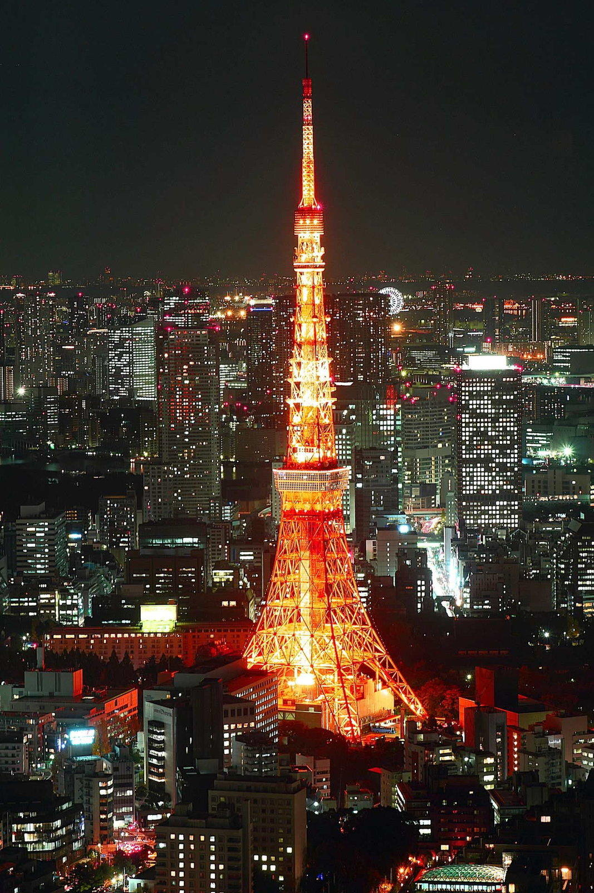
Orange-and-white communications tower and observation landmark in Shiba Park. Main and top decks give contrasting views over the bay and midtown. Height was chosen to exceed the Golden Gate Bridge's main span when built. Illumination schemes change seasonally and for city events.
Post-war symbol of reconstruction; it later shared skyline prominence with taller Shinjuku and Roppongi towers. A mid-city orientation point between Shinagawa and the Imperial Palace.
Knife shops, tamagoyaki stalls, and sushi queues surviving wholesale market relocation. Go early for shortest lines at popular sushi counters. Carry cash for small seafood snacks.
Outer ring stayed active when inner wholesale moved to Toyosu. Gastronomic morning ritual near Ginza shopping.
Ueno Park
Period: 1873
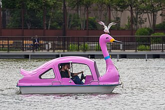
Ueno Park is one of Tokyo's most beloved green spaces, nestled within the bustling metropolis. Established during the Meiji era, it serves as a tranquil oasis amidst the hustle and bustle of modern life. It houses Japan's oldest zoo, dating back to 1882. The park features over 1,000 cherry trees, making it a popular spot for hanami (cherry blossom viewing). Ueno Park contains numerous historical monuments and statues commemorating important figures in Japanese history. During autumn, the park transforms into a colorful display of maple leaves. It is also known for hosting various festivals throughout the year.
Originally opened in 1873, Ueno Park was once home to Edo Castle's moats and gardens. Today, it retains its historical charm with traditional Japanese architecture and cultural landmarks such as the Tokyo National Museum and the Tokyo Zoological Gardens. Visit Ueno Park for its serene atmosphere, beautiful cherry blossom season, and vibrant cultural attractions.
Ueno Park museums
Address: Ueno, Taitō | Style: Western-style museum buildings and Shinobazu Pond | Period: 1873 park; museums late 19th–20th c.
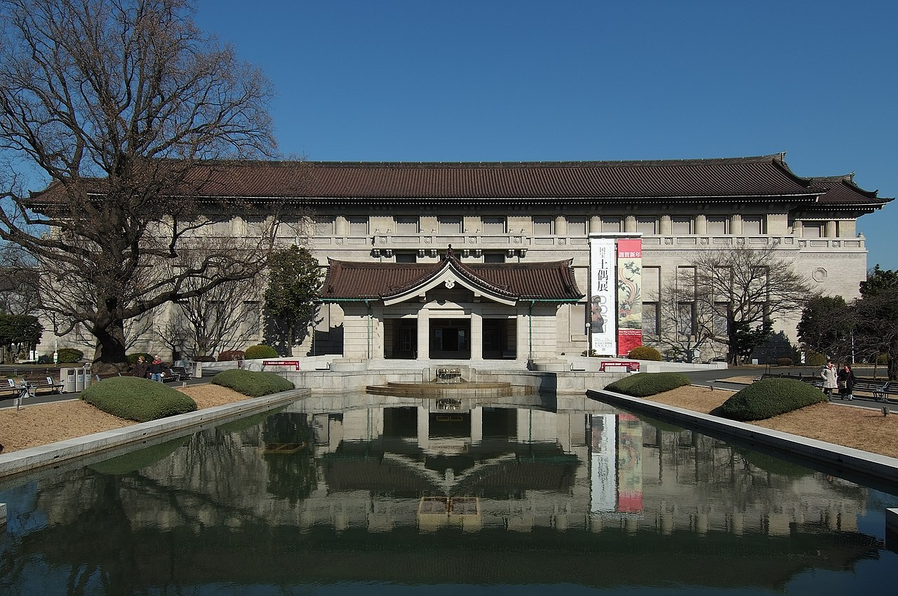
Park cluster holding the Tokyo National Museum, Ueno Zoo, concert halls, and lotus ponds—crowded during cherry blossom weeks. The National Museum spans multiple buildings by period and region. Shinobazu Pond rental boats offer slower pacing than museum hopping.
Kaneiji temple lands became a public park in the Meiji period, anchoring high culture institutions north of the station. Single metro stop bundles Japan's flagship art collections with festival atmosphere.
Yanaka Ginza
Style: Traditional Japanese architecture with influences from the Meiji era.
Yanaka Ginza is a charming traditional market district nestled within the tranquil Yanaka neighborhood of Tokyo. It offers a unique blend of historical atmosphere and contemporary shopping experiences. It features over 40 small shops selling everything from antiques to handmade ceramics. The area is home to several teahouses offering traditional Japanese tea ceremonies. Many of the buildings date back to the Meiji era, showcasing traditional Japanese architecture. It's also famous for its vibrant flower markets, especially during springtime when cherry blossoms are in full bloom. Locals often come here to shop for souvenirs and gifts.
Founded in the late Edo period, Yanaka Ginza was originally known as 'Yanagiya Ginza,' named after the Yanagiya family who owned the land. Over time, it evolved into a bustling marketplace where locals could buy daily necessities and enjoy local craftsmanship. Today, it remains one of the few remaining authentic markets in modern Tokyo, preserving its vintage charm amidst urban development. Visit Yanaka Ginza for its quaint shops, artisanal goods, and a glimpse into Tokyo's rich cultural heritage.